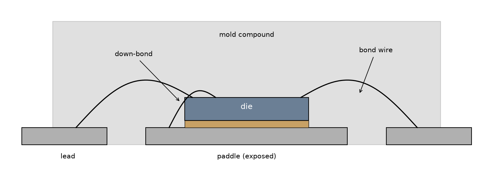
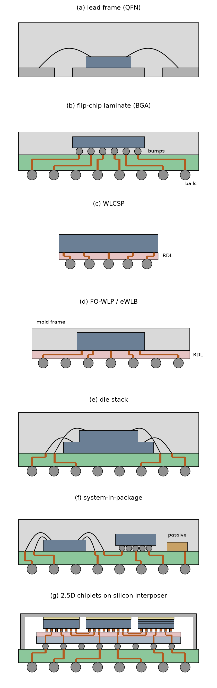
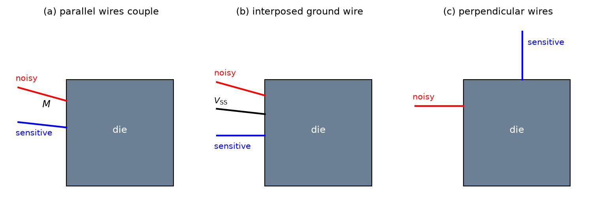

IC Packaging
Design of Complex Integrated Circuits
5 IC Packaging
5.1 From Wafer to Packaged IC
From Wafer to Packaged IC
- Electrical connection of signals and power from the IC to the PCB.
- Interconnects adding little delay or distortion (small parasitic \(R\), \(L\), \(C\), and \(k\)).
- Mechanical connection of the IC to the PCB.
- Removal of the heat produced in the IC.
- Protection of the IC from mechanical damage and the environment.
- Compatibility with the thermal expansion (CTE) of the PCB.
- Inexpensive manufacturing and testing.
5.2 Chip-to-Package Connection
Chip-to-Package Connection
Chip-to-Package Connection
- A simple pad consisting only of a square of top metal may “lift off” during bonding due to insufficient adherence; a mechanically robust pad is formed from the two topmost metal layers, connected by many small vias, at the price of somewhat larger capacitance.
- Pads carrying RF signals can be shaped as octagons to reduce their capacitance (about 20 % reduction).
Chip-to-Package Connection
- In some processes, it is allowed to place circuitry (e.g., ESD protection) below the pads to save chip area—called pad-over-active-area (PoAA).
5.3 Package Types
Package Types
- Pads can be placed across the whole surface of the die rather than only at the periphery.
- The top-level metal pads are covered with solder balls.
- The IC is mounted upside down and must be carefully aligned to the package (done blind!); then heat is applied to melt the solder balls.
- This process is also called controlled collapse chip connection (C4).
Package Types

5.3.1 Lead-Frame Package
5.3.2 Laminate Package
5.3.3 Chip-Scale and Wafer-Level Packages
5.3.4 Stacked Packages
5.3.5 2.5D Integration with Chiplets and Silicon Interposer
- A single monolithic die is limited by the reticle size of the lithography tool, and the yield drops rapidly with die area; several smaller dice yield better and can exceed the reticle limit in total.
- Each chiplet can be fabricated in the most suitable technology (heterogeneous integration), e.g., the compute logic in a leading-edge node, while I/O, analog, or RF functions stay in a mature, cheaper node.
2.5D Integration with Chiplets and Silicon Interposer
- Memory can be placed very close to the processor; a typical example is high-bandwidth memory (HBM), a stack of DRAM dice connected by through-silicon vias.
- Proven chiplets can be reused across products, reducing design effort.
5.4 Thermal Design
Thermal Design
- Consumer ambient temperature range: −30 to +85 °C.
- Industrial/automotive ambient temperature range: −40 to +85 °C.
- Usual IC technology junction temperature limits: −40 to +125 °C.
- Automotive IC junction temperature limits: −40 to +150 °C.
5.4.1 Thermal Calculations
\[ \Delta T = Q \cdot R_\mathrm{th} \tag{49}\]
\[ R_\mathrm{th,series} = \sum_{i} R_{\mathrm{th},i} \qquad \frac{1}{R_\mathrm{th,parallel}} = \sum_{i} \frac{1}{R_{\mathrm{th},i}} \tag{50}\]
Thermal Calculations
\[ \Delta T = R_\mathrm{th,ja} \cdot P_\mathrm{diss} \tag{51}\]
Thermal Calculations
Figure 56: Thermal equivalent network of a packaged IC: the dissipated power \(P_\mathrm{diss}\) acts as a current source injecting heat into the junction node.
5.5 Package Parasitics
Package Parasitics

Figure 57: Equivalent circuit of a single package connection from the PCB to the on-chip pad: the bond wire and package trace contribute a series inductance and resistance, while the package trace and the bond pad add shunt capacitances.
Package Parasitics
\[ L' \approx 0.2 \ln \left( \frac{2h}{r} \right) \; \mathrm{nH/mm} \tag{52}\]
\[ L' \approx \frac{1.6}{0.72 + W/d} \; \mathrm{nH/mm} \tag{53}\]
Package Parasitics
\[ L_\mathrm{m}' \approx 0.1 \ln \left[ 1 + \left( \frac{2h}{d} \right)^2 \right] \; \mathrm{nH/mm} \tag{54}\]
Package Parasitics
Note 4: Example Calculation of the Bond-Wire Inductance
Let us assume a bond wire with a diameter of 25 µm (i.e., \(r = 12.5\,\mu\text{m}\)) and a length of \(l = 2\,\text{mm}\), running at a height of \(h = 300\,\mu\text{m}\) above the ground plane. With Equation 52, the inductance per length is
\[ L' \approx 0.2 \ln \left( \frac{2 \cdot 300\,\mu\text{m}}{12.5\,\mu\text{m}} \right) \; \text{nH/mm} = 0.2 \ln (48) \; \text{nH/mm} = 0.77\,\text{nH/mm} \]
and the total inductance of the bond wire is
\[ L = L' \cdot l = 0.77\,\text{nH/mm} \cdot 2\,\text{mm} = 1.55\,\text{nH} \]
Note that the height enters only logarithmically: doubling \(h\) to \(600\,\mu\text{m}\) increases the inductance by just 18 % to \(1.83\,\text{nH}\). At a frequency of \(f = 1\,\text{GHz}\), this bond wire already shows a reactance of
\[ X_L = 2 \pi f L = 9.7\,\Omega \]
Package Parasitics
Example Calculation of the Bond-Wire Inductance
If this bond wire carries the supply current of a digital block, a current step of \(\Delta i = 10\,\text{mA}\) within \(\Delta t = 100\,\text{ps}\) causes a supply bounce of
\[ V = L \frac{\Delta i}{\Delta t} = 1.55\,\text{nH} \cdot \frac{10\,\text{mA}}{100\,\text{ps}} = 155\,\text{mV} \]
which is significant for a core supply voltage of about 1.2 V.
To reduce the supply bounce, a second bond wire of the same dimensions is placed in parallel at a distance of \(d = 300\,\mu\text{m}\). With Equation 54, the mutual inductance per length is
\[ L_\mathrm{m}' \approx 0.1 \ln \left[ 1 + \left( \frac{2 \cdot 300\,\mu\text{m}}{300\,\mu\text{m}} \right)^2 \right] \; \text{nH/mm} = 0.1 \ln (5) \; \text{nH/mm} = 0.16\,\text{nH/mm} \]
Package Parasitics
Example Calculation of the Bond-Wire Inductance
resulting in a mutual inductance of \(L_\mathrm{m} = L_\mathrm{m}' \cdot l = 0.32\,\text{nH}\) between the two bond wires. The magnetic coupling factor is
\[ k = \frac{L_\mathrm{m}}{\sqrt{L_1 L_2}} = \frac{L_\mathrm{m}}{L} = \frac{0.32\,\text{nH}}{1.55\,\text{nH}} = 0.21 \]
As both bond wires carry currents in the same direction, the mutual inductance adds to the self-inductance of each wire, and the effective inductance of the parallel connection is
\[ L_\mathrm{eff} = \frac{L + L_\mathrm{m}}{2} = \frac{L}{2} (1 + k) = 0.94\,\text{nH} \]
Package Parasitics
Example Calculation of the Bond-Wire Inductance
Instead of halving the inductance to \(0.77\,\text{nH}\), the second bond wire reduces it only by 40 %, and the supply bounce for the same current step drops from \(155\,\text{mV}\) to \(94\,\text{mV}\). A larger distance between the bond wires reduces \(k\) and brings \(L_\mathrm{eff}\) closer to \(L/2\). Conversely, if the two bond wires carry unrelated signals, the same coupling causes crosstalk: the current step of \(10\,\text{mA}\) in \(100\,\text{ps}\) in one bond wire induces a voltage of \(L_\mathrm{m} \, \Delta i / \Delta t = 32\,\text{mV}\) in the other.
5.5.1 Multiple Pads, Bond Wires, and Pins
5.5.2 Exposed Paddle and Down-Bonds
5.5.3 Mutual Inductance and Crosstalk
- Arrange critical wires perpendicular to each other (mutual inductance requires parallel current paths).
- Interpose \(V_\mathrm{SS}\) or \(V_\mathrm{DD}\) wires between critical bond wires; the return current in the interposed wire partially cancels the coupled flux.
Mutual Inductance and Crosstalk

5.5.4 Bond Wires as Circuit Elements
5.6 Package Qualification
Package Qualification
| Test (examples) | Standard | Motivation & check |
|---|---|---|
| Pre-conditioning (PC) | JESD22-A113 | Moisture soak and reflow simulate storage and board assembly before the other stress tests. |
| Moisture sensitivity level (MSL) | J-STD-020 | Classification of how long a package may be exposed to ambient moisture before soldering. |
| Temperature cycling (TC) | JESD22-A104 | Repeated heating and cooling must not cause failures (thermal expansion mismatch, see CTE). |
| Temperature humidity bias (THB) / biased HAST | JESD22-A101 / A110 | Corrosion and leakage under humidity, temperature, and applied voltage. |
| Unbiased highly accelerated stress test (UHAST) | JESD22-A118 | Exposure of package and die to high temperature and humidity without bias. |
Package Qualification
| Test (examples) | Standard | Motivation & check |
|---|---|---|
| High-temperature storage life (HTSL) | JESD22-A103 | Storage at high temperature for thousands of hours (intermetallic growth). |
| Wire bond pull and shear | MIL-STD-883 (2011) / JESD22-B116 | Mechanical strength of the bond wires and their connections. |
| Solder ball shear | JESD22-B117 | Mechanical strength of the solder balls of BGA and WLCSP packages. |
| Drop test | JESD22-B111 | The assembled PCB is dropped repeatedly under standardized conditions. |
| Temperature cycling on board (TCoB) | IPC-9701 | The assembled PCB is temperature-cycled to check the solder-joint reliability. |
References
Craninckx, Jan, and Michiel S. J. Steyaert. 1995. “A 1.8-GHz CMOS Low-Phase-Noise Voltage-Controlled Oscillator with Prescaler.” IEEE Journal of Solid-State Circuits 30 (12): 1474–82.
Pozar, David M. 2011. Microwave Engineering. 4th ed. Wiley.